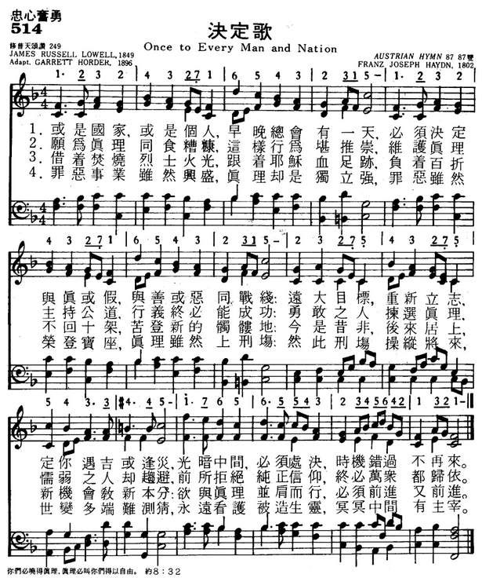
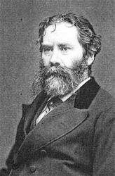
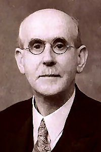
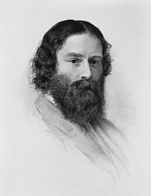

|
|
|
|
1 Once to every man and nation 2 Then to side with truth is noble, 3 By the light of burning martyrs, 4 Though the cause of evil prosper,
|
514决定歌
1.或是国家，或是个人，早晚总会有一天，
必顺决定与真或假，与善或恶同战线； 远大目标，重新立志，定你遇吉或逢灾， 光暗中间，必须处决，时机错过不再来。 2.愿与真理，同食糟糠，这样行为堪推崇， 维护真理，主持公道，行义终必能成功； 勇敢之人拣选真理，懦弱之人却趋避， 前所拒绝纯正信仰，终必万众都归依。 3.借着焚烧烈士火光，跟着耶稣血足迹， 负着百折不回十架，苦登新的髑髅地； 今是昔非，后来居上，新机会教新本分； 欲与真理并肩前行，必须前进又前进。 4.罪恶事业，虽然兴盛，真理却是独立强； 罪恶虽然荣登宝座，真理虽然上刑场； 然此刑场，操纵将来，世变多端难测猜， 永远看护被造生灵，冥冥中间有主宰。 |
|
https://www.mred365.cn/szxg/7517.html
 https://hymnary.org/hymn/WASH1957/page/389
|
|
|
|
|


-

Once to Every Man and Nation | Fountainview Academy | The Great Controversy https://youtu.be/cSMqesZz3tU -
London Philharmonic Choir - Once to Every Man and Nation https://youtu.be/U21b6h8g7PM -
Once To Every Man and Nation - The King´s Heralds https://youtu.be/nsDFeXwQd1Q
| Short Name: | James Russell Lowell |
| Full Name: | Lowell, James Russell, 1819-1891 |
| Birth Year: | 1819 |
| Death Year: | 1891 |
Lowell, James Russell,

LL.D., was born at Cambridge, Massachusetts, February 22, 1819; graduated at Harvard College, 1838, and was called to the Bar in 1840. Professor of Modern Languages and Literature (succeeding the Poet Longfellow) in Harvard, 1855; American Minister to Spain, also to England in 1881. He was editor of the Atlantic Monthly, from 1857 to 1862; and of the North American Review from 1863 to 1872. Professor Lowell is the most intellectual of American poets, and first of her art critics and humorists. He has written much admirable moral and sacred poetry, but no hymns. One piece, “Men, whose boast it is that ye" (Against Slavery), is part of an Anti-Slavery poem, and in its present form is found in Hymns of the Spirit, 1864. Part of this is given in Songs for the Sanctuary, N.Y., 1865, as "They are slaves who will not choose.” [Rev. F. M. Bird, M.A.]
--John Julian, Dictionary of Hymnology (1907)
"Once to Every Man and Nation" is a hymn based upon the poem "The Present Crisis" by James Russell Lowell.[1][2][3]
The original poem was written as a protest against the Mexican–American War.[4]
The hymn was written to the tune of Ebenezer (hymn) by Thomas J. Williams in 1890.[4]
Tune Information
| Title: | EBENEZER (Williams) |
| Composer: | Thomas John Williams (1890) |
| Meter: | 8.7.8.7 D |
| Incipit: | 11232 12234 3215 |
| Key: | f minor |
| Copyright: | Public Domain |
| Short Name: | Thomas John Williams |
| Full Name: | Williams, Thomas John, 1869-1944 |
| Birth Year: | 1869 |
| Death Year: | 1944 |

Thomas J. Williams
1869–1944
Although his primary vocation was in the insurance business, Thomas John Williams (b. Ynysmeudwy, Glamorganshire, Wales, 1869; d. Llanelly, Carmarthenshire, Wales, 1944) studied with David Evans at Cardiff and later was organist and choirmaster at Zion Chapel (1903-1913) and Calfaria Chapel (1913-1931), both in Llanelly. He composed a number of hymn tunes and a few anthems.
Bert Polman
Words: James Russell Lowell (b. Feb. 22, 1819; d. Aug.
12, 1891)
Music: Ebenezer, by Thomas John Williams (b. _____, 1869;
d. Apr. 23, 1944)
Links:
Wordwise Hymns
The Cyber
Hymnal
Note: Originally, this hymn was a 1845 poem, protesting the American war with Mexico. Lowell called it “The Present Crisis.” It was argued by him and others (including Abraham Lincoln) that it would increase the power of the southern states, and enlarge the area in which slavery was accepted. In 1896, W. Garrett Horder selected parts of Lowell’s poem and turned them into a hymn relating more broadly to ethical decisions in political and community life.
The tune Ebenezer was also called, in Welsh, Ton Y Botel (literally “wave the bottle”) because of a story (correct or not) that it was found in a bottle washed up on the coast of Wales. Another tune that works well with this hymn is Hyfrydol.
There is little of Bible truth, or of the fundamentals of the apostolic faith in the hymn– understandable, since Lowell was a Unitarian. However, it does speak eloquently to those occasions when we must make weighty moral decisions that could radically affect the future (if not our future, specifically). Christians can certainly take these words as a challenge to stand for biblical principles in the testing hour.
CH-1) Once to every man and nation, comes the moment to decide,
In the strife of truth with falsehood, for the good or evil side;
Some great cause, some great decision, offering each the bloom or
blight,
And the choice goes by forever, ’twixt that darkness and that light.
We can discern many such choices in the Scriptures. Adam and Eve’s decision to believe the devil, rather than believe God, has been affecting the human family ever since (cf. Gen. 2:17; 3:4-6). So has Abraham’s decision to heed his wife’s suggestion and father a child by her Egyptian maid, Hagar (Gen. 16:1-2). The Arab nations descending from that child, Ishmael, have been a thorn in the side of Israel for four millennia.
Israel was challenged to obey God–and warned of the consequences if they didn’t–many times. Moses reviewed God’s laws and told them, “See, I have set before you today life and good, death and evil” (Deut. 30:15). Joshua urged them, “Choose for yourselves this day whom you will serve….But as for me and my house, we will serve the Lord” (Josh. 24:15). And Elijah issued a challenge to Israel when he confronted the prophets of Baal, “How long will you falter between two opinions? If the Lord is God, follow Him; but if Baal, follow him” (I Kgs. 18:21).
The early church faced such major decisions too, in times of persecution. The Jewish leadership in Jerusalem commanded the apostles to stop preaching the gospel.
“They called them and commanded them not to speak at all nor teach in the name of Jesus. But Peter and John answered and said to them, ‘Whether it is right in the sight of God to listen to you more than to God, you judge. For we cannot but speak the things which we have seen and heard.”…[And] Peter and the other apostles answered and said: ‘We ought to obey God rather than men’” (Acts. 4:18-20; 5:29; cf. Lk. 16:13; Rom. 12:9, 21; I Thess. 5:21-22).
What if they’d caved in? How different history might have been! And we face great choices in our day, as well. James Lowell speaks of “new Calv’ries,” (CH-3). Of course Christ’s sacrifice of the cross to pay the debt of our sin cannot be replicated or repeated. But in the sense that we must at times be ready to lay our very lives on the line for truth and justice, we face our own crosses, and our own sacrifices.
This is a hymn that needs to be studied thoughtfully, as well as sung!
CH-4) Though the cause of evil prosper, yet the truth alone is
strong;
Though her portion be the scaffold, and upon the throne be wrong;
Yet that scaffold sways the future, and behind the dim unknown,
Standeth God within the shadow, keeping watch above His own.
Questions:
1) What great challenges calling for a decisive stand are we facing
today, as a nation?
2) What life-changing decisions are you facing in your own life? What principles will you apply to make your choice?
Links:
Wordwise Hymns
The Cyber
Hymnal
About the Song
The lyrics to this hymn are excerpted from a lengthy 1845 poem "The Present Crisis" by James Russell Lowell. It was written as a protest against the Mexican-American War. Lowell's was a leading abolitionist and opposed the Mexican-American War in large part because it brought another slave state (Texas) into the union. Decades later, it became the inspiration for the title of The Crisis, the magazine published by the National Association for the Advancement of Colored People (NAACP).
The most commonly used setting is the Welsh hymn Ebenezer (aka "Ton-Y-Botel")composed by Thomas J. Williams - 1st published in 1897. It was extracted from the second movement of his anthem "Goleu Yn Y Glyn" (Light in the Valley). The title Ebenezer comes from Ebenezer Chapel in South Wales where he wrote the melody.
It has been set to other tunes including "Hyfrydol" (used as the tune for "Blue Boat Home" by Peter Mayer, which can be found in Rise Again) and "Austrian Hymn" by by Franz Joseph Haydn.
The 7th video below is a setting to Hyfrydol. The 8th is still another setting by David Stanley York.
https://www.riseupandsing.org/songs/once-every-man-and-nation
-
詹姆士·拉塞爾·洛威爾
編輯
- 詹姆士·拉塞爾·洛威爾
- Robert Lowell
- 1819年
- 1891年
- 作家
- 入選美國偉人名錄
- 《比格羅詩稿》
目錄
成就與榮譽
編輯人物簡介
編輯james Russell Lowell 1819 – 1891
|
James Russell Lowell
|
|
|---|---|
|

James Russell Lowell, c. 1855
|
|
| Born |
February 22, 1819 Cambridge, Massachusetts, United States |
| Died |
August 12, 1891 (aged 72) Cambridge, Massachusetts, United States |
| Alma mater | Harvard University |
| Literary movement | Romanticism |
| Spouse |
Maria White (m. 1844–53; her death) Frances Dunlap (m. 1857–85; her death) |
| Children | 4 |
| Parents | Charles Lowell |
| Signature | |
James Russell Lowell (/ˈloʊəl/; February 22, 1819 – August 12, 1891) was an American Romantic poet, critic, editor, and diplomat. He is associated with the fireside poets, a group of New England writers who were among the first American poets that rivaled the popularity of British poets. These writers usually used conventional forms and meters in their poetry, making them suitable for families entertaining at their fireside.
Lowell graduated from Harvard College in 1838, despite his reputation as a troublemaker, and went on to earn a law degree from Harvard Law School. He published his first collection of poetry in 1841 and married Maria White in 1844. The couple had several children, though only one survived past childhood.
He became involved in the movement to abolish slavery, with Lowell using poetry to express his anti-slavery views and taking a job in Philadelphia, Pennsylvania, as the editor of an abolitionist newspaper. After moving back to Cambridge, Lowell was one of the founders of a journal called The Pioneer, which lasted only three issues. He gained notoriety in 1848 with the publication of A Fable for Critics, a book-length poem satirizing contemporary critics and poets. The same year, he published The Biglow Papers, which increased his fame. He went on to publish several other poetry collections and essay collections throughout his literary career.
Maria died in 1853, and Lowell accepted a professorship of languages at Harvard in 1854. He traveled to Europe before officially assuming his teaching duties in 1856, and married Frances Dunlap shortly thereafter in 1857. That year, Lowell also became editor of The Atlantic Monthly. He continued to teach at Harvard for twenty years.
He received his first political appointment, the ambassadorship to the Kingdom of Spain 20 years later. He was later appointed ambassador to the Court of St. James's. He spent his last years in Cambridge in the same estate where he was born, and died there in 1891.
Lowell believed that the poet played an important role as a prophet and critic of society. He used poetry for reform, particularly in abolitionism. However, his commitment to the anti-slavery cause wavered over the years, as did his opinion on African-Americans. He attempted to emulate the true Yankee accent in the dialogue of his characters, particularly in The Biglow Papers. This depiction of the dialect, as well as his many satires, was an inspiration to writers such as Mark Twain and H. L. Mencken.
Biography[edit]
Early life[edit]

{kind=link}
{kind=link}
James Russell Lowell was born February 22, 1819.[1] He was a member of the eighth generation of the Lowell family,[2] the descendants of Percival Lowle who settled in Newbury, Massachusetts, in 1639.[3] His parents were the Reverend Charles Lowell (1782–1861), a minister at a Unitarian church in Boston who had previously studied theology at Edinburgh, and Harriett Brackett Spence Lowell.[4] By the time that James was born, the family owned a large estate in Cambridge called Elmwood.[5] He was the youngest of six children; his siblings were Charles, Rebecca, Mary, William, and Robert.[6] Lowell's mother built in him an appreciation for literature at an early age, especially in poetry, ballads, and tales from her native Orkney.[4] He attended school under Sophia Dana, who later married George Ripley; he later studied at a school run by a particularly harsh disciplinarian, where one of his classmates was Richard Henry Dana Jr.[7]
Lowell attended Harvard College beginning at age 15 in 1834, though he was not a good student and often got into trouble.[8] In his sophomore year, he was absent from required chapel attendance 14 times and from classes 56 times.[9] In his last year there, he wrote, "During Freshman year, I did nothing, during Sophomore year I did nothing, during Junior year I did nothing, and during Senior year I have thus far done nothing in the way of college studies."[8] In his senior year, he became one of the editors of Harvardiana literary magazine, to which he contributed prose and poetry that he admitted was of low quality. As he said later, "I was as great an ass as ever brayed & thought it singing."[10] During his undergraduate years, Lowell was a member of Hasty Pudding and served both as Secretary and Poet.
Lowell was elected the poet of the class of 1838[11] and, as was tradition, was asked to recite an original poem on Class Day, the day before Commencement on July 17, 1838.[9] He was suspended, however, and not allowed to participate. Instead, his poem was printed and made available thanks to subscriptions paid by his classmates.[11] He had composed the poem in Concord,[12] where he had been exiled by the Harvard faculty to the care of the Rev. Barzallai Frost because of his neglect of his studies.[13] During his stay in Concord, he became friends with Ralph Waldo Emerson and got to know the other Transcendentalists. His Class Day poem satirized the social movements of the day; abolitionists, Thomas Carlyle, Emerson, and the Transcendentalists were treated.[12]
Lowell did not know what vocation to choose after graduating, and he vacillated among business, the ministry, medicine, and law. He ultimately enrolled at Harvard Law School in 1840 and was admitted to the bar two years later.[14] While studying law, however, he contributed poems and prose articles to various magazines. During this time, he was admittedly depressed and often had suicidal thoughts. He once confided to a friend that he held a cocked pistol to his forehead and considered killing himself at the age of 20.[15]
Marriage and family[edit]
In late 1839, Lowell met Maria White through her brother William, a classmate at Harvard,[16] and the two became engaged in the autumn of 1840. Maria's father Abijah White, a wealthy merchant from Watertown, insisted that their wedding be postponed until Lowell had gainful employment.[17] They were finally married on December 26, 1844,[18] shortly after the groom published Conversations on the Old Poets, a collection of his previously published essays.[19] A friend described their relationship as "the very picture of a True Marriage".[20] Lowell himself believed that she was made up "half of earth and more than half of Heaven".[17] She, too, wrote poetry, and the next twelve years of Lowell's life were deeply affected by her influence. He said that his first book of poetry A Year's Life (1841) "owes all its beauty to her", though it only sold 300 copies.[17]
Maria's character and beliefs led her to become involved in the movements directed against intemperance and slavery. She was a member of the Boston Female Anti-Slavery Society and persuaded her husband to become an abolitionist.[21] James had previously expressed antislavery sentiments, but Maria urged him towards more active expression and involvement.[22] His second volume of poems Miscellaneous Poems expressed these antislavery thoughts, and its 1,500 copies sold well.[23]
Maria was in poor health, and the couple moved to Philadelphia shortly after their marriage, thinking that her lungs could heal there.[24] In Philadelphia, he became a contributing editor for the Pennsylvania Freeman, an abolitionist newspaper.[25] In the spring of 1845, the Lowells returned to Cambridge to make their home at Elmwood. They had four children, though only one (Mabel, born 1847) survived past infancy. Blanche was born December 31, 1845, but lived only fifteen months; Rose, born in 1849, survived only a few months as well; their only son Walter was born in 1850 but died in 1852.[26] Lowell was very affected by the loss of almost all of his children. His grief over the death of his first daughter in particular was expressed in his poem "The First Snowfall" (1847).[27] He again considered suicide, writing to a friend that he thought "of my razors and my throat and that I am a fool and a coward not to end it all at once".[26]
Literary career[edit]
Lowell's earliest poems were published without remuneration in the Southern Literary Messenger in 1840.[28] He was inspired to new efforts towards self-support and joined with his friend Robert Carter in founding the literary journal The Pioneer.[20] The periodical was distinguished by the fact that most of its content was new rather than material that had been previously published elsewhere, and by the inclusion of very serious criticism, which covered not only literature but also art and music.[29] Lowell wrote that it would "furnish the intelligent and reflecting portion of the Reading Public with a rational substitute for the enormous quantity of thrice-diluted trash, in the shape of namby-pamby love tales and sketches, which is monthly poured out to them by many of our popular Magazines."[20] William Wetmore Story noted the journal's higher taste, writing that "it took some stand & appealled to a higher intellectual Standard than our puerile milk or watery namby-pamby Mags with which we are overrun".[30] The first issue of the journal included the first appearance of "The Tell-Tale Heart" by Edgar Allan Poe.[31] Lowell was treated for an eye disease in New York shortly after the first issue, and in his absence Carter did a poor job of managing the journal.[23] The magazine ceased publication after three monthly numbers beginning in January 1843, leaving Lowell $1,800 in debt.[31] Poe mourned the journal's demise, calling it "a most severe blow to the cause—the cause of a Pure Taste".[30]
Despite the failure of The Pioneer, Lowell continued his interest in the literary world. He wrote a series on "Anti-Slavery in the United States" for the Daily News, though his series was discontinued by the editors after four articles in May 1846.[32] He had published these articles anonymously, believing that they would have more impact if they were not known to be the work of a committed abolitionist.[33] In the spring of 1848, he formed a connection with the National Anti-Slavery Standard of New York, agreeing to contribute weekly either a poem or a prose article. After only one year, he was asked to contribute half as often to the Standard to make room for contributions from Edmund Quincy, another writer and reformer.[34]
{kind=link}
A Fable for Critics was one of Lowell's most popular works, published anonymously in 1848. It proved a popular satire, and the first 3,000 copies sold out quickly.[35] In it, he took good-natured jabs at his contemporary poets and critics—but not all the subjects were pleased. Edgar Allan Poe was referred to as part genius and "two-fifths sheer fudge"; he reviewed the work in the Southern Literary Messenger and called it "'loose'—ill-conceived and feebly executed, as well in detail as in general ... we confess some surprise at his putting forth so unpolished a performance."[36] Lowell offered his New York friend Charles Frederick Briggs all the profits from the book's success (which proved relatively small), despite his own financial needs.[35]
In 1848, Lowell also published The Biglow Papers, later named by the Grolier Club as the most influential book of 1848.[37] The first 1,500 copies sold out within a week and a second edition was soon issued—though Lowell made no profit, as he had to absorb the cost of stereotyping the book himself.[38] The book presented three main characters, each representing different aspects of American life and using authentic American dialects in their dialogue.[39] Under the surface, The Biglow Papers was also a denunciation of the Mexican–American War and war in general.[24]
First trip to Europe[edit]
In 1850, Lowell's mother died unexpectedly, as did his third daughter, Rose. Her death left Lowell depressed and reclusive for six months, despite the birth of his son Walter by the end of the year. He wrote to a friend that death "is a private tutor. We have no fellow-scholars, and must lay our lessons to heart alone."[40] These personal troubles as well as the Compromise of 1850 inspired Lowell to accept an offer from William Wetmore Story to spend a winter in Italy.[41] To pay for the trip, Lowell sold land around Elmwood, intending to sell off further acres of the estate over time to supplement his income, ultimately selling off 25 of the original 30 acres (120,000 m2).[42] Walter died suddenly in Rome of cholera, and Lowell and his wife, with their daughter Mabel, returned to the United States in October 1852.[43] Lowell published recollections of his journey in several magazines, many of which would be collected years later as Fireside Travels (1867). He also edited volumes with biographical sketches for a series on British Poets.[44]
His wife Maria, who had been suffering from poor health for many years, became very ill in the spring of 1853 and died on October 27[45] of tuberculosis.[26] Just before her burial, her coffin was opened so that her daughter Mabel could see her face while Lowell "leaned for a long while against a tree weeping", according to Henry Wadsworth Longfellow and his wife, who were in attendance.[46] In 1855, Lowell oversaw the publication of a memorial volume of his wife's poetry, with only fifty copies for private circulation.[44] Despite his self-described "naturally joyous" nature,[47] life for Lowell at Elmwood was further complicated by his father becoming deaf in his old age, and the deteriorating mental state of his sister Rebecca, who sometimes went a week without speaking.[48] He again cut himself off from others, becoming reclusive at Elmwood, and his private diaries from this time period are riddled with the initials of his wife.[49] On March 10, 1854, for example, he wrote: "Dark without & within. M.L. M.L. M.L."[50] Longfellow, a friend and neighbor, referred to Lowell as "lonely and desolate".[51]
Professorship and second marriage[edit]
At the invitation of his cousin John Amory Lowell, James Russell Lowell was asked to deliver a lecture at the prestigious Lowell Institute.[52] Some speculated the opportunity was because of the family connection, offered as an attempt to bring him out of his depression.[53] Lowell chose to speak on "The English Poets", telling his friend Briggs that he would take revenge on dead poets "for the injuries received by one whom the public won't allow among the living".[52] The first of the twelve-part lecture series was to be on January 9, 1855, though by December, Lowell had only completed writing five of them, hoping for last-minute inspiration.[54] His first lecture was on John Milton and the auditorium was oversold; Lowell had to give a repeat performance the next afternoon.[55] Lowell, who had never spoken in public before, was praised for these lectures. Francis James Child said that Lowell, whom he deemed was typically "perverse", was able to "persist in being serious contrary to his impulses and his talents".[54] While his series was still in progress, Lowell was offered the Smith Professorship of Modern Languages at Harvard, a post vacated by Longfellow, at an annual salary of $1,200, though he never applied for it.[56] The job description was changing after Longfellow; instead of teaching languages directly, Lowell would supervise the department and deliver two lecture courses per year on topics of his own choosing.[57] Lowell accepted the appointment, with the proviso that he should have a year of study abroad. He set sail on June 4 of that year,[58] leaving his daughter Mabel in the care of a governess named Frances Dunlap.[56] Abroad, he visited Le Havre, Paris, and London, spending time with friends including Story, Robert Browning and Elizabeth Barrett Browning, and Leigh Hunt. Primarily, however, Lowell spent his time abroad studying languages, particularly German, which he found difficult. He complained: "The confounding genders! If I die I shall have engraved on my tombstone that I died of der, die, das, not because I caught them but because I couldn't."[58]
He returned to the United States in the summer of 1856 and began his college duties.[59] Towards the end of his professorship, then-president of Harvard Charles William Eliot noted that Lowell seemed to have "no natural inclination" to teach; Lowell agreed, but retained his position for twenty years.[60] He focused on teaching literature, rather than etymology, hoping that his students would learn to enjoy the sound, rhythm, and flow of poetry rather than the technique of words.[61] He summed up his method: "True scholarship consists in knowing not what things exists, but what they mean; it is not memory but judgment."[62] Still grieving the loss of his wife, during this time Lowell avoided Elmwood and instead lived on Kirkland Street in Cambridge, an area known as Professors' Row. He stayed there, along with his daughter Mabel and her governess Frances Dunlap, until January 1861.[63]
Lowell had intended never to remarry after the death of his wife Maria White. However, in 1857, surprising his friends, he became engaged to Frances Dunlap, whom many described as simple and unattractive.[64] Dunlap, niece of the former governor of Maine Robert P. Dunlap,[65] was a friend of Lowell's first wife and formerly wealthy, though she and her family had fallen into reduced circumstances.[56] Lowell and Dunlap married on September 16, 1857, in a ceremony performed by his brother.[66] Lowell wrote, "My second marriage was the wisest act of my life, & as long as I am sure of it, I can afford to wait till my friends agree with me."[59]
War years and beyond[edit]
{kind=link}
In the autumn of 1857, The Atlantic Monthly was established, and Lowell was its first editor. With its first issue in November of that year, he at once gave the magazine the stamp of high literature and of bold speech on public affairs.[67] In January 1861, Lowell's father died of a heart attack, inspiring Lowell to move his family back to Elmwood. As he wrote to his friend Briggs, "I am back again to the place I love best. I am sitting in my old garret, at my old desk, smoking my old pipe ... I begin to feel more like my old self than I have these ten years."[68] Shortly thereafter, in May, he left The Atlantic Monthly when James T. Fields took over as editor; the magazine had been purchased by Ticknor and Fields for $10,000 two years before.[69] Lowell returned to Elmwood by January 1861 but maintained an amicable relationship with the new owners of the journal, continuing to submit his poetry and prose for the rest of his life.[68] His prose, however, was more abundantly presented in the pages of the North American Review during the years 1862–1872. For the Review, he served as a coeditor along with Charles Eliot Norton.[70] Lowell's reviews for the journal covered a wide variety of literary releases of the day, though he was writing fewer poems.[71]
As early as 1845, Lowell had predicted the debate over slavery would lead to war[72] and, as the Civil War broke out in the 1860s, Lowell used his role at the Review to praise Abraham Lincoln and his attempts to maintain the Union.[70] Lowell lost three nephews during the war, including Charles Russell Lowell Jr., who became a Brigadier General and fell at the Battle of Cedar Creek. Lowell himself was generally a pacifist. Even so, he wrote, "If the destruction of slavery is to be a consequence of the war, shall we regret it? If it be needful to the successful prosecution of the war, shall anyone oppose it?"[73] His interest in the Civil War inspired him to write a second series of The Biglow Papers,[68] including one specifically dedicated to the preliminary Emancipation Proclamation called "Sunthin' in the Pastoral Line" in 1862.[74]
Shortly after Lincoln's assassination, Lowell was asked to present a poem at Harvard in memory of graduates killed in the war. His poem, "Commemoration Ode", cost him sleep and his appetite, but was delivered on July 21, 1865,[75] after a 48-hour writing binge.[76] Lowell had high hopes for his performance but was overshadowed by the other notables presenting works that day, including Ralph Waldo Emerson and Oliver Wendell Holmes. "I did not make the hit I expected", he wrote, "and am ashamed at having been tempted again to think I could write poetry, a delusion from which I have been tolerably free these dozen years."[77] Despite his personal assessment, friends and other poets sent many letters to Lowell congratulating him. Emerson referred to his poem's "high thought & sentiment" and James Freeman Clarke noted its "grandeur of tone".[78] Lowell later expanded it with a strophe to Lincoln.[76]
In the 1860s, Lowell's friend Longfellow spent several years translating Dante Alighieri's Divine Comedy and regularly invited others to help him on Wednesday evenings.[79] Lowell was one of the main members of the so-called "Dante Club", along with William Dean Howells, Charles Eliot Norton and other occasional guests.[80] Shortly after serving as a pallbearer at the funeral of friend and publisher Nathaniel Parker Willis on January 24, 1867,[81] Lowell decided to produce another collection of his poetry. Under the Willows and Other Poems was released in 1869,[71] though Lowell originally wanted to title it The Voyage to the Vinland and Other Poems. The book, dedicated to Norton, collected poems Lowell had written within the previous twenty years and was his first poetry collection since 1848.[82]
Lowell intended to take another trip to Europe. To finance it, he sold off more of Elmwood's acres and rented the house to Thomas Bailey Aldrich; Lowell's daughter Mabel, by this time, had moved into a new home with her husband Edward Burnett, the son of a successful businessman-farmer from Southborough, Massachusetts.[83] Lowell and his wife set sail on July 8, 1872,[84] after he took a leave of absence from Harvard. They visited England, Paris, Switzerland, and Italy. While overseas, he received an honorary Doctorate of Law from the University of Oxford and another from Cambridge University. They returned to the United States in the summer of 1874.[83]
Political appointments[edit]
{kind=link}
Lowell resigned from his Harvard professorship in 1874, though he was persuaded to continue teaching through 1877.[60] It was in 1876 that Lowell first stepped into the field of politics. That year, he served as a delegate to the Republican National Convention in Cincinnati, Ohio, speaking on behalf of presidential candidate Rutherford B. Hayes.[85] Hayes won the nomination and, eventually, the presidency. In May 1877, President Hayes, an admirer of The Biglow Papers, sent William Dean Howells to Lowell with a handwritten note proffering an ambassadorship to either Austria or Russia; Lowell declined, but noted his interest in Spanish literature.[86] Lowell was then offered and accepted the role of Minister to the court of Spain at an annual salary of $12,000.[86] Lowell sailed from Boston on July 14, 1877, and, though he expected he would be away for a year or two, did not return to the United States until 1885, with the violinist Ole Bull renting Elmwood for a portion of that time.[87] The Spanish media referred to him as "José Bighlow".[88] Lowell was well-prepared for his political role, having been trained in law, as well as being able to read in multiple languages. He had trouble socializing while in Spain, however, and amused himself by sending humorous dispatches to his political bosses in the United States, many of which were later collected and published posthumously in 1899 as Impressions of Spain.[89] Lowell's social life improved when the Spanish Academy elected him a corresponding member in late 1878, allowing him contribute to the preparation of a new dictionary.[90]
In January 1880, Lowell was informed of his appointment as Minister to England, his nomination made without his knowledge as far back as June 1879. He was granted a salary of $17,500 with about $3,500 for expenses.[91] While serving in this capacity, he addressed an importation of allegedly diseased cattle and made recommendations that predated the Pure Food and Drug Act.[92] Queen Victoria commented that she had never seen an ambassador who "created so much interest and won so much regard as Mr. Lowell".[93] Lowell held this role until the close of Chester A. Arthur's presidency in the spring of 1885, despite his wife's failing health. Lowell was already well known in England for his writing and, during his time there, befriended fellow author Henry James, who referred to him as "conspicuously American".[93] Lowell also befriended Leslie Stephen many years earlier and became the godfather to his daughter, future writer Virginia Woolf.[94] Lowell was popular enough that he was offered a professorship at Oxford after his recall by President Grover Cleveland, though the offer was declined.[95] He was elected as a member to the American Philosophical Society in 1883.[96]
His second wife, Frances, died on February 19, 1885, while still in England.[97]
Later years and death[edit]
{kind=link}
He returned to the United States by June 1885, living with his daughter and her husband in Southboro, Massachusetts.[98] He then spent time in Boston with his sister before returning to Elmwood in November 1889.[99] By this time, most of his friends were dead, including Quincy, Longfellow, Dana, and Emerson, leaving him depressed and contemplating suicide again.[100] Lowell spent part of the 1880s delivering various speeches,[101] and his last published works were mostly collections of essays, including Political Essays, and a collection of his poems Heartsease and Rue in 1888.[99] His last few years he traveled back to England periodically[102] and when he returned to the United States in the fall of 1889, he moved back to Elmwood[103] with Mabel, while her husband worked for clients in New York and New Jersey.[104] That year, Lowell gave an address at the centenary of George Washington's inauguration. Also that year, the Boston Critic dedicated a special issue to Lowell on his seventieth birthday to recollections and reminiscences by his friends, including former presidents Hayes and Benjamin Harrison and British Prime Minister William Ewart Gladstone as well as Alfred, Lord Tennyson and Francis Parkman.[103]
In the last few months of his life, Lowell struggled with gout, sciatica in his left leg, and chronic nausea; by the summer of 1891, doctors believed that Lowell had cancer in his kidneys, liver, and lungs. His last few months, he was administered opium for the pain and was rarely fully conscious.[105] He died on August 12, 1891, at Elmwood.[106] After services in the Appleton Chapel, he was buried in Mount Auburn Cemetery.[107] After his death, Norton served as his literary executor and published several collections of Lowell's works and his letters.[108]
Writing style and literary theory[edit]
{kind=link}
Early in his career, James Russell Lowell's writing was influenced by Swedenborgianism, a Spiritualism-infused form of Christianity founded by Emanuel Swedenborg, causing Frances Longfellow (wife of the poet Henry Wadsworth Longfellow) to mention that "he has been long in the habit of seeing spirits".[109] He composed his poetry rapidly when inspired by an "inner light" but could not write to order.[110] He subscribed to the common nineteenth-century belief that the poet was a prophet but went further, linking religion, nature, and poetry, as well as social reform.[109] Evert Augustus Duyckinck and others welcomed Lowell as part of Young America, a New York-based movement. Though not officially affiliated with them, he shared some of their ideals, including the belief that writers have an inherent insight into the moral nature of humanity and have an obligation for literary action along with their aesthetic function.[111] Unlike many of his contemporaries, including members of Young America, Lowell did not advocate for the creation of a new national literature. Instead, he called for a natural literature, regardless of country, caste, or race, and warned against provincialism which might "put farther off the hope of one great brotherhood".[29] He agreed with his neighbor Longfellow that "whoever is most universal, is also most national".[111] As Lowell said:
A scholar of linguistics, Lowell was one of the founders of the American Dialect Society.[113] He applied this passion to some of his writings, most famously in The Biglow Papers, in which he presents an early 19th-century rural Yankee dialect,[114] complete with nonstandard local grammar and quasi-phonetic spelling[115][116][26]—a literary method called eye dialect. In using this vernacular, Lowell intended to get closer to the common man's experience and was rebelling against more formal and, as he thought, unnatural representations of Americans in literature. As he wrote in his introduction to The Biglow Papers, "few American writers or speakers wield their native language with the directness, precision, and force that are common as the day in the mother country" (i.e. England).[117] Though intentionally humorous, this precise representation of an early New England dialect was pioneering work within American literature.[118] For example, Lowell's character Hosea Biglow says in verse:
Lowell is considered one of the fireside poets, a group of writers from New England in the 1840s who all had a substantial national following and whose work was often read aloud by the family fireplace. Besides Lowell, the main figures from this group were Longfellow, Holmes, John Greenleaf Whittier, and William Cullen Bryant.[120]
Beliefs[edit]
Lowell was an abolitionist, but his opinions wavered concerning African-Americans. He advocated suffrage for blacks, yet he noted that their ability to vote could be troublesome. Even so, he wrote, "We believe the white race, by their intellectual and traditional superiority, will retain sufficient ascendancy to prevent any serious mischief from the new order of things."[121] Freed slaves, he wrote, were "dirty, lazy & lying".[122] Even before his marriage to abolitionist Maria White, Lowell wrote: "The abolitionists are the only ones with whom I sympathize of the present extant parties."[123] After his marriage, Lowell at first did not share his wife's enthusiasm for the cause, but he was eventually pulled in.[124] The couple often gave money to fugitive slaves, even when their own financial situation was not strong, especially if they were asked to free a spouse or child.[125] Even so, he did not always fully agree with the followers of the movement. The majority of these people, he said, "treat ideas as ignorant persons do cherries. They think them unwholesome unless they are swallowed, stones and all."[27] Lowell depicted Southerners very unfavorably in his second collection of The Biglow Papers but, by 1865, admitted that Southerners were "guilty only of weakness" and, by 1868, said that he sympathized with Southerners and their viewpoint on slavery.[126] Enemies and friends of Lowell alike questioned his vacillating interest in the question of slavery. Abolitionist Samuel Joseph May accused him of trying to quit the movement because of his association with Harvard and the Boston Brahmin culture: "Having got into the smooth, dignified, self-complacent, and change-hating society of the college and its Boston circles, Lowell has gone over to the world, and to 'respectability'."[127]
Lowell was also involved in other reform movements. He urged better conditions for factory workers, opposed capital punishment, and supported the temperance movement. His friend Longfellow was especially concerned about his fanaticism for temperance, worrying that Lowell would ask him to destroy his wine cellar.[23] There are many references to Lowell's drinking during his college years, and part of his reputation in school was based on it. His friend Edward Everett Hale denied these allegations. Lowell considered joining the "Anti-Wine" club at Harvard, and he became a teetotaler during the early years of his first marriage.[128] However, as he gained notoriety, he became popular in social circles and clubs and he drank rather heavily when away from his wife. When he drank, he had wild mood swings, ranging from euphoria to frenzy.[129]
Criticism and legacy[edit]
In 1849, Lowell said of himself, "I am the first poet who has endeavored to express the American Idea, and I shall be popular by and by."[130] Poet Walt Whitman said: "Lowell was not a grower—he was a builder. He built poems: he didn't put in the seed, and water the seed, and send down his sun—letting the rest take care of itself: he measured his poems—kept them within formula."[131] Fellow fireside poet John Greenleaf Whittier praised Lowell by writing two poems in his honor and calling him "our new Theocritus" and "one of the strongest and manliest of our writers–a republican poet who dares to speak brave words of unpopular truth".[132] British author Thomas Hughes referred to Lowell as one of the most important writers in the United States: "Greece had her Aristophanes; Rome her Juvenal; Spain has had her Cervantes; France her Rabelais, her Molière, her Voltaire; Germany her Jean Paul, her Heine; England her Swift, her Thackeray; and America has her Lowell."[120] Lowell's satires and use of dialect were an inspiration for writers like Mark Twain, William Dean Howells, H. L. Mencken, and Ring Lardner.[133]
Contemporary critic and editor Margaret Fuller wrote, "his verse is stereotyped; his thought sounds no depth, and posterity will not remember him."[134] Evert Augustus Duyckinck thought Lowell was too similar to other poets like William Shakespeare and John Milton.[135] Ralph Waldo Emerson noted that, though Lowell had significant technical skill, his poetry "rather expresses his wish, his ambition, than the uncontrollable interior impulse which is the authentic mark of a new poem ... and which is felt in the pervading tone, rather than in brilliant parts or lines."[136] Even his friend Richard Henry Dana Jr. questioned Lowell's abilities, calling him "very clever, entertaining & good humored ... but he is rather a trifler, after all."[137] In the twentieth century, poet Richard Armour dismissed Lowell, writing: "As a Harvard graduate and an editor for the Atlantic Monthly, it must have been difficult for Lowell to write like an illiterate oaf, but he succeeded."[138] The poet Amy Lowell featured her relative James Russell Lowell in her poem A Critical Fable (1922), the title mocking A Fable for Critics. Here, a fictional version of Lowell says he does not believe that women will ever be equal to men in the arts and "the two sexes cannot be ranked counterparts".[139] Modern literary critic Van Wyck Brooks wrote that Lowell's poetry was forgettable: "one read them five times over and still forgot them, as if this excellent verse had been written in water."[136] Nonetheless, in 1969 the Modern Language Association established a prize named after Lowell, awarded annually for "an outstanding literary or linguistic study, a critical edition of an important work, or a critical biography."[140]
Lowell's poem "The Present Crisis", an early work that addressed the national crisis over slavery leading up to the Civil War, has had an impact in the modern civil rights movement. The National Association for the Advancement of Colored People named its newsletter The Crisis after the poem, and Martin Luther King Jr. frequently quoted the poem in his speeches and sermons.[141] The poem was also the source of the hymn "Once to Every Man and Nation".[142]
List of selected works